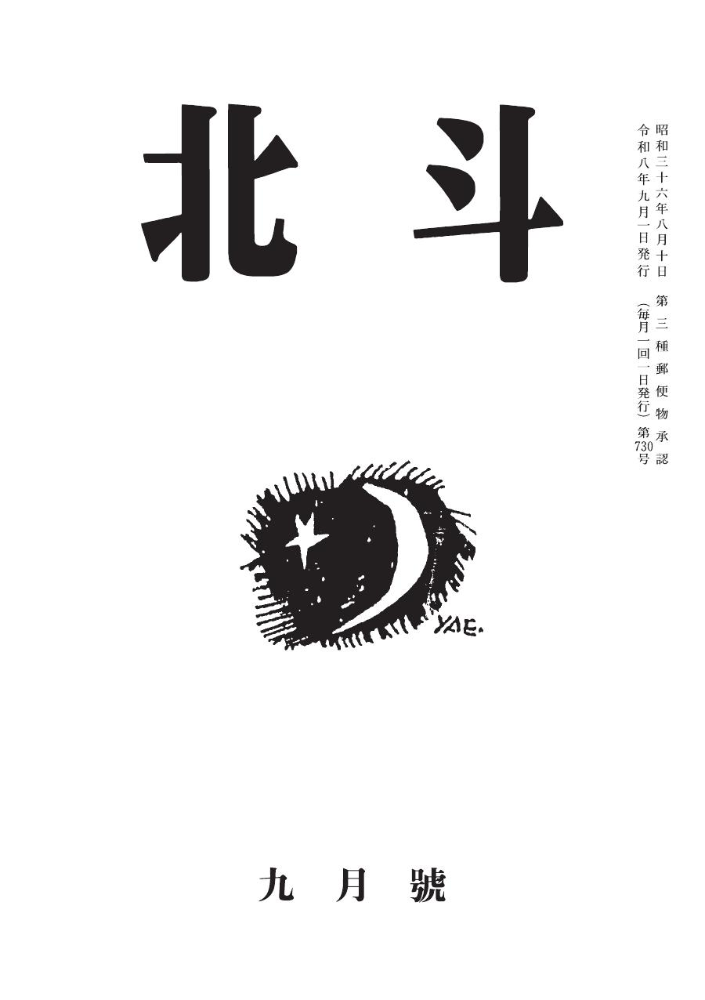
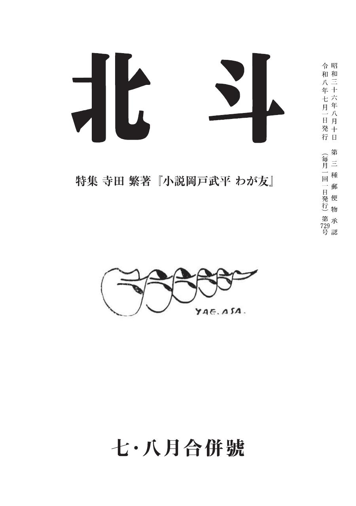
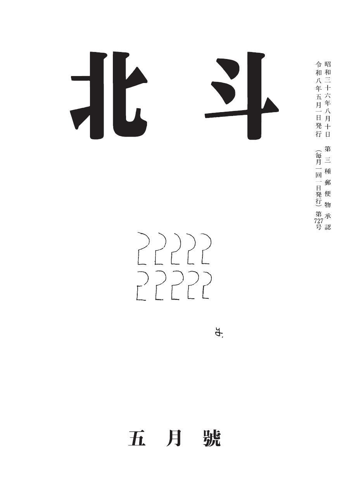
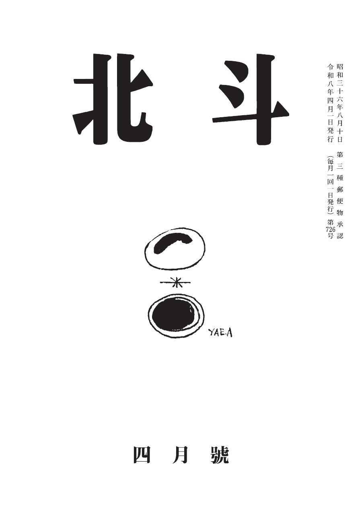
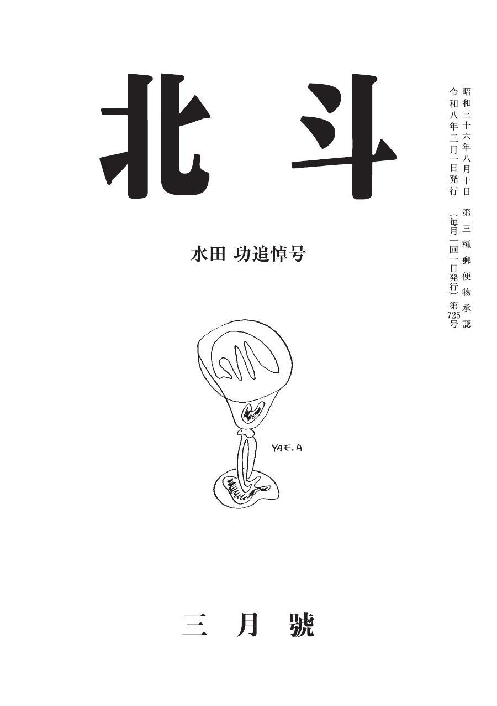
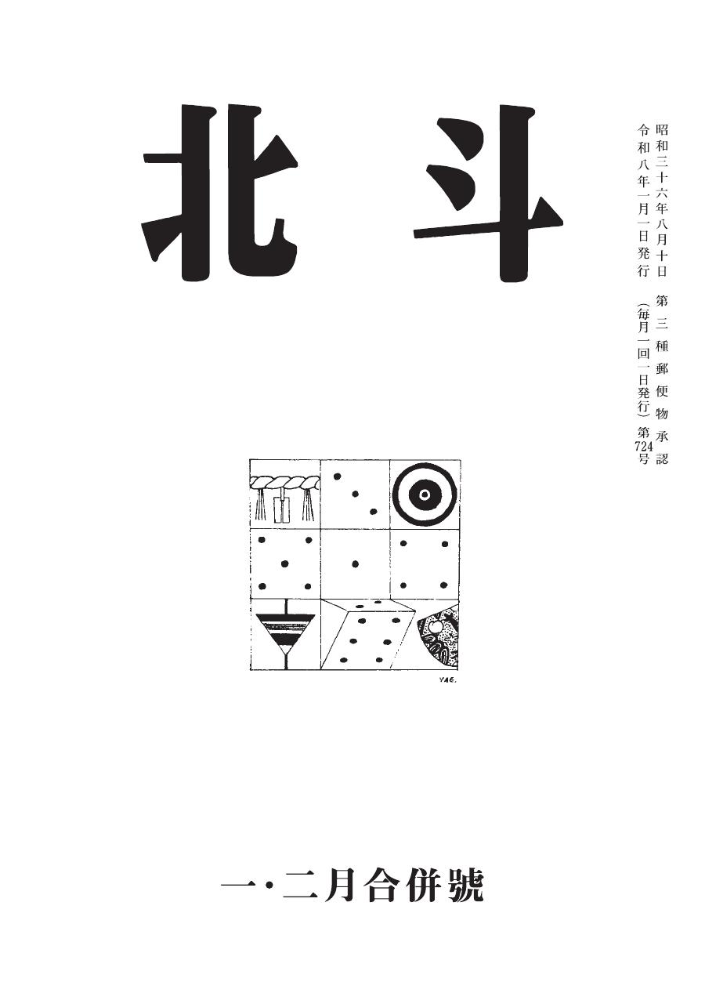
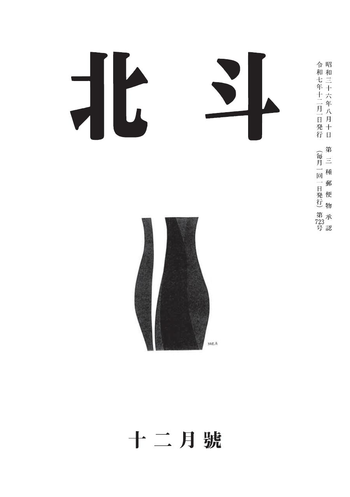
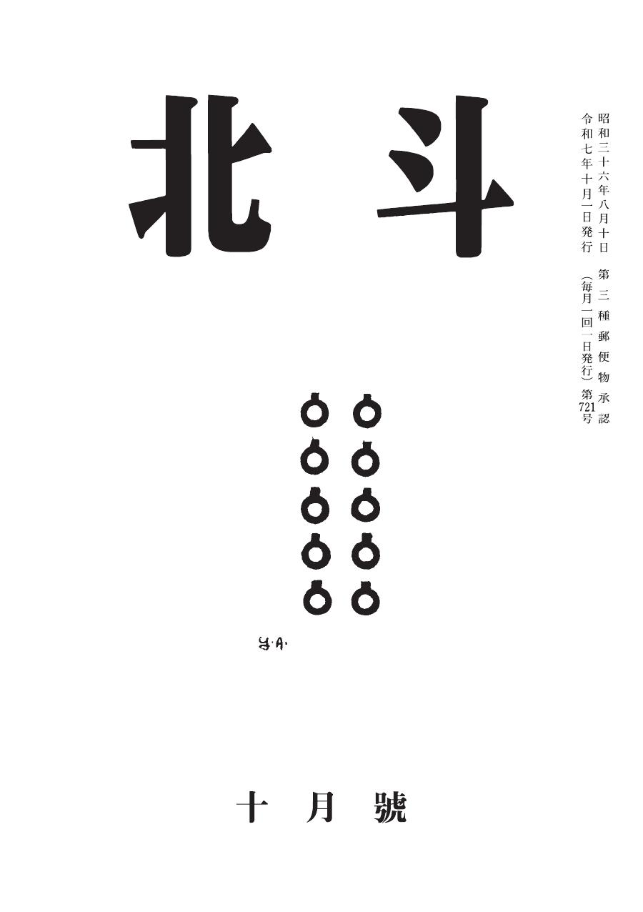
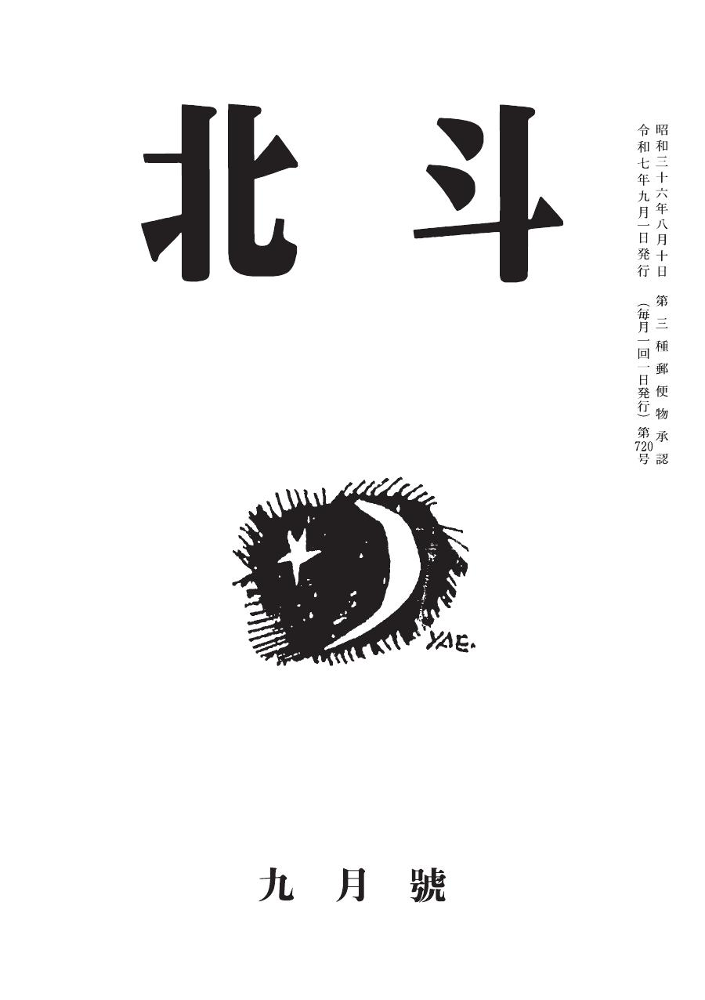
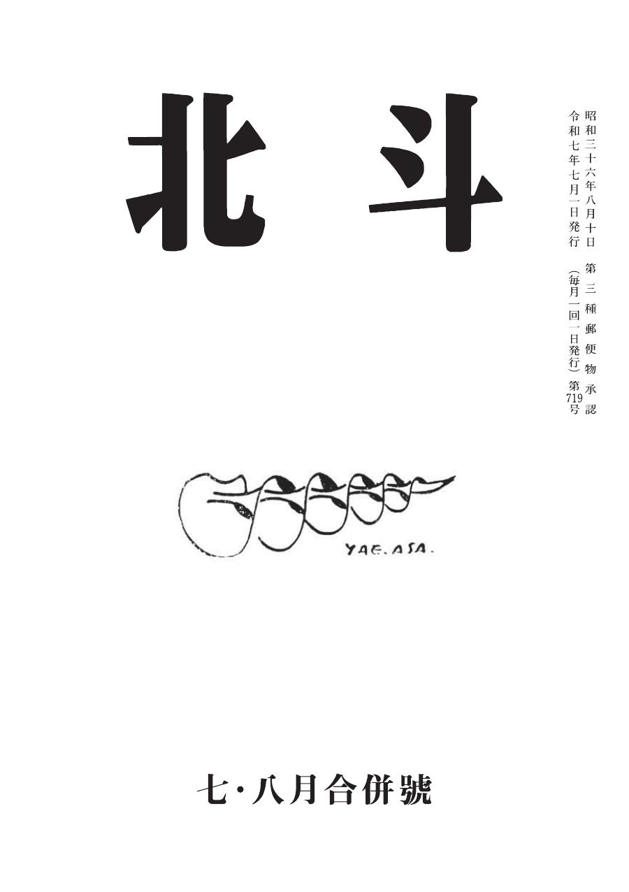

バックナンバー一覧
表紙画像を掲載している号は、実際の表紙をご覧いただけます。本文PDFは現在公開準備中です。
令和8年（2026年）

第730号
令和8年9月1日発行 頒価500円
▶ 目次を見る
【小説】面白くて非なるもの／永野佳奈子
【小説】おれの日常を取り戻すことの件（四）／高田杜康
【小説】ひとりになれば（その六）／藁科眞魚
【詩】バンビが死んだ日／藁科眞魚
【エッセイ】山村生活―その後― 変わりゆく環境／天動説／池田龍一
【評論】平塚らいてう（36）／ゲンヒロ
人工天文台／編集後記 ほか
【小説】おれの日常を取り戻すことの件（四）／高田杜康
【小説】ひとりになれば（その六）／藁科眞魚
【詩】バンビが死んだ日／藁科眞魚
【エッセイ】山村生活―その後― 変わりゆく環境／天動説／池田龍一
【評論】平塚らいてう（36）／ゲンヒロ
人工天文台／編集後記 ほか

第729号
令和8年7月1日発行 七・八月合併號 頒価500円
▶ 目次を見る
【小説】おれの日常を取り戻すことの件（三）／高田杜康
【評論】冤罪を作らず／竹中忍
【詩】はるの祝祭のスケルツォ／藁科眞魚
【特集】寺田繁著『小説岡戸武平 乱歩わが友』
人工天文台／編集後記 ほか
【評論】冤罪を作らず／竹中忍
【詩】はるの祝祭のスケルツォ／藁科眞魚
【特集】寺田繁著『小説岡戸武平 乱歩わが友』
人工天文台／編集後記 ほか

第728号
令和8年6月1日発行 頒価500円
▶ 目次を見る
【小説】終の住み処を探して／永野佳奈子
【小説】おれの日常を取り戻すことの件（二）／高田杜康
【小説】ひとりになれば（その五）／藁科眞魚
【詩】発泡スチロール／藁科眞魚
【エッセイ】文明か野蛮か／竹中忍
【エッセイ】視聴率／寺田繁
【エッセイ】現代人が失った能力／庭の客人／池田龍一
【評論】平塚らいてう（35）／ゲンヒロ
人工天文台／編集後記 ほか
【小説】おれの日常を取り戻すことの件（二）／高田杜康
【小説】ひとりになれば（その五）／藁科眞魚
【詩】発泡スチロール／藁科眞魚
【エッセイ】文明か野蛮か／竹中忍
【エッセイ】視聴率／寺田繁
【エッセイ】現代人が失った能力／庭の客人／池田龍一
【評論】平塚らいてう（35）／ゲンヒロ
人工天文台／編集後記 ほか

第727号
令和8年5月1日発行 頒価500円
▶ 目次を見る
※ 目次情報をここに入力してください

第726号
令和8年4月1日発行 頒価500円
▶ 目次を見る
※ 目次情報をここに入力してください

第725号
令和8年3月1日発行 頒価500円
▶ 目次を見る
※ 目次情報をここに入力してください

第724号
令和8年2月1日発行 頒価500円
▶ 目次を見る
※ 目次情報をここに入力してください

第723号
令和8年1月1日発行 頒価500円
▶ 目次を見る
※ 目次情報をここに入力してください
令和7年（2025年）
北斗
第722号
第722号
令和7年12月1日発行
PDF準備中

第721号
令和7年11月1日発行
PDF準備中

第720号
令和7年10月1日発行
PDF準備中

第719号
令和7年9月1日発行
PDF準備中
北斗
第718号
第718号
令和7年8月1日発行
PDF準備中
北斗
第717号
第717号
令和7年7月1日発行
PDF準備中
※ より古い号については事務局にお問い合わせください